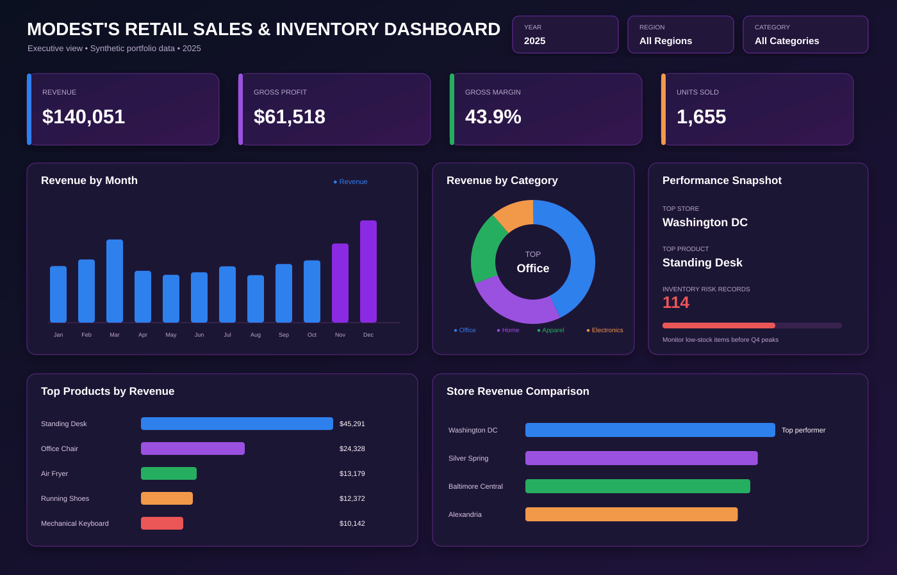
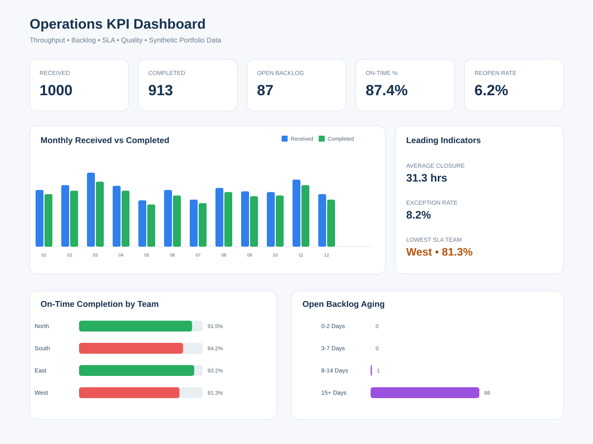
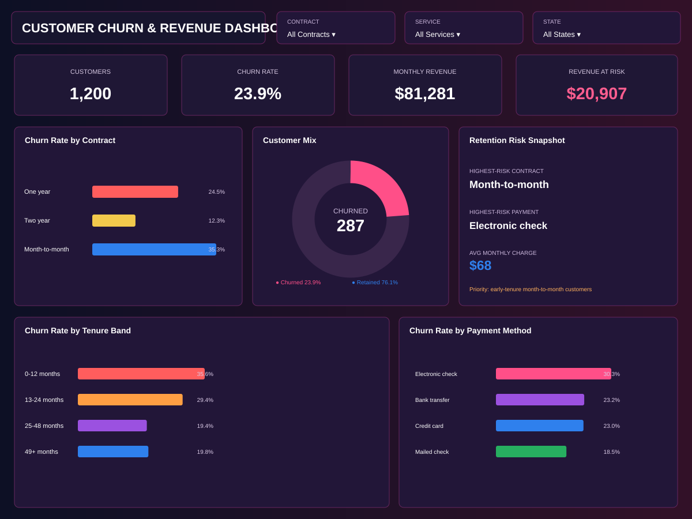
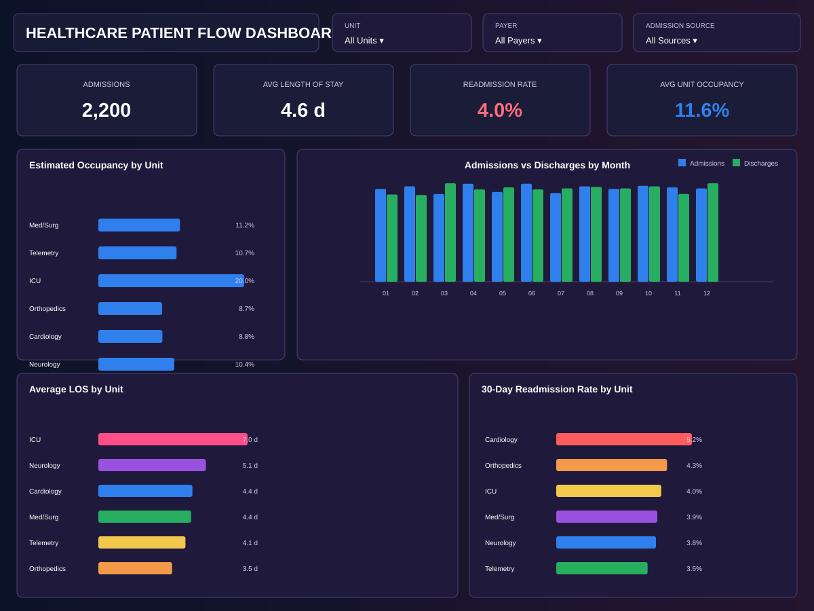
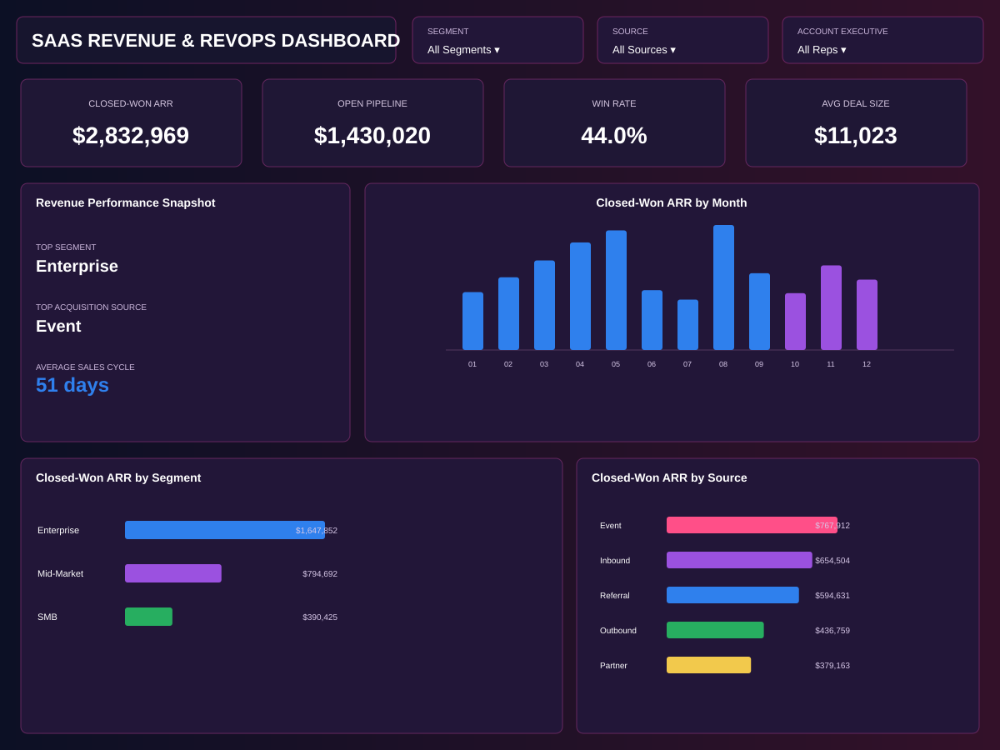

SQL Analysis
Complex joins, CTEs, window functions, validation, root-cause analysis, and reusable reporting logic.
DATA ANALYST • BUSINESS INTELLIGENCE • ANALYTICS ENGINEERING
\nData Analyst with 6+ years of experience building SQL-driven reporting, executive dashboards, KPI frameworks, automated workflows, and decision-support analytics across healthcare, operations, finance, and business intelligence.
\n \nSELECT\n business_problem,\n trusted_metrics,\n actionable_insight\nFROM analytics\nWHERE decision_ready = 1;WHAT I DELIVER
Complex joins, CTEs, window functions, validation, root-cause analysis, and reusable reporting logic.
Power BI and Tableau experiences designed around decisions, not visual clutter.
SQL, Python, stored procedures, scheduled workflows, and ETL that reduce repetitive reporting.
Clear metric definitions, leading indicators, thresholds, SLA logic, and business performance scorecards.
Reconciliation, duplicate detection, missing-data review, source-to-report validation, and auditability.
Translate ambiguous questions into analytical requirements, insights, recommendations, and executive stories.
FEATURED SKILLS
FEATURED PROJECTS
Every case study includes a business question, synthetic data, analysis code, dashboard, findings, and recommendations.

\nProblem: Identify revenue drivers and inventory risks across stores and products.
\nKey finding: Analyzed $140K in synthetic revenue; Washington DC led store performance and Office led category revenue.
\nBusiness impact: Converts sales and stock signals into replenishment and product-mix actions.
\n \n
\nProblem: Detect SLA risk before month-end instead of reacting after performance misses.
\nKey finding: Modeled 1,000 work items, 87-item backlog, and 87.4% on-time completion.
\nBusiness impact: Prioritizes aged backlog, weak teams, reopen rate, and exception signals.
\n \n
\nProblem: Determine which customers are most likely to churn and how much revenue is exposed.
\nKey finding: Analyzed 1,200 customers, a 23.9% churn rate, and $20.9K monthly revenue at risk.
\nBusiness impact: Focuses retention on early-tenure, month-to-month, high-risk segments.
\n \n
\nProblem: Monitor admissions, discharges, capacity, LOS, and readmissions to surface flow bottlenecks.
\nKey finding: Analyzed 2,200 encounters with 4.6-day average LOS and 4.0% readmission rate.
\nBusiness impact: Helps operations teams focus on long stays, unit pressure, and avoidable readmissions.
\n \n
\nProblem: Connect pipeline, win rate, ARR, sales cycle, acquisition source, and customer segment performance.
\nKey finding: Modeled $2.83M closed-won ARR, $1.43M open pipeline, and a 44.0% win rate.
\nBusiness impact: Helps revenue leaders identify high-value segments, stronger sources, and pipeline-quality opportunities.
\n \nPROFESSIONAL EXPERIENCE SNAPSHOT
SQL-driven patient-flow, utilization, quality, capacity, and leadership reporting across healthcare environments.
Operational scorecards, throughput, productivity, backlog, finance visibility, and root-cause analysis.
Power BI, Tableau, SQL, Python, ETL, validation, scheduled reporting, and stakeholder-ready analytics.
LET’S CONNECT
\nI’m interested in roles where strong SQL, reporting automation, dashboard design, and business problem solving can make an immediate impact.
\n